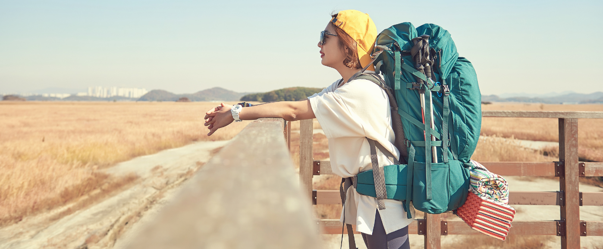
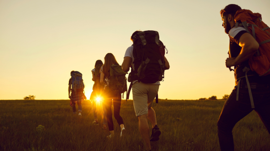

Den Guide til Valg af den Perfekte Backpacker Rygsæk
Den Guide til Valg af den Perfekte Backpacker Rygsæk
- Inklusiv Top 10 liste af de bedste Backpacker rygsække
Af Mie Holm Jensen
Er du en førstegangs backpacker, der forbereder sig på dit første store eventyr? Så er valget af den rigtige rygsæk afgørende for din komfort og succes på turen. Som kvinde er
det ekstra vigtigt at finde en rygsæk, der ikke kun passer til din kropsform, men også opfylder dine specifikke behov undervejs. Og hvad med en rygsæk med hjul? Kan det være
det rigtige valg for dig?
I dette blogindlæg vil vi guide dig gennem junglen af valgmuligheder, når det kommer til backpacker rygsække. Vi vil udforske de vigtigste overvejelser, du bør tage, når du
vælger din rygsæk, samt give dig eksperttips og anbefalinger til det bedste udstyr til din første backpacking-rejse. Fra den perfekte pasform til must-have funktioner vil vi
sikre, at du er godt rustet til din rejse. Så lad os dykke ned i verden af backpacker udstyr og finde den perfekte rygsæk til dig!
Guide til din backpacker rygsæk - Hvad du skal have for øje
1. Overvej din rejseplan:
Når du planlægger din første backpacking-rejse, er det vigtigt at tage højde for forskellige faktorer såsom destination, varighed af rejsen og planlagte aktiviteter.
• Hvor længe planlægger du at være på farten?
• Hvad er din destination, og hvilke slags aktiviteter planlægger du at deltage i?
Disse faktorer vil hjælpe dig med at bestemme den rette størrelse, kapacitet og funktioner til din rygsæk.
(Har du behov for idéer til seværdigheder, aktiviteter og lign til din rejse destination? Klik her)

Nicole (til venstre) og Claire(til højre)
2. Vælg den rette størrelse:
Størrelsen på din rygsæk er afgørende for at sikre, at du har tilstrækkelig plads til at pakke alt, hvad du har brug for, uden at overbelaste dig selv. Til kortere ture eller
weekendeventyr kan en mindre rygsæk med en kapacitet på 40-50 liter være passende, mens længere ture eller ekspeditioner kræver en større rygsæk med en kapacitet på
60-70 liter eller mere.
3. Pasform og komfort:
En rygsæk, der ikke passer ordentligt, kan føre til ubehag og endda skader undervejs på din rejse. Rygsække designet specielt til kvinder er skræddersyet til at passe til den
kvindelige krop og tilbyde øget komfort og støtte undervejs. Disse rygsække har typisk justerbare stropper og polstring, der passer til kvinders anatomiske form og forhindrer
ubehag og skader under langvarig brug. Det er vigtigt at prøve forskellige rygsække og justere stropperne, så rygsækken sidder godt på din krop. Polstrede skulderstropper og
et justerbart hoftebælte er essentielt for at fordele vægten jævnt og reducere belastningen på dine skuldre og ryg. Husk at komfort er afgørende, især når du skal bære din rygsæk
i lange perioder eller over ujævnt terræn.
4. Holdbarhed og kvalitet:
Da din rygsæk vil være din primære opbevaringsplads og beskytte dit udstyr mod elementerne undervejs, er det vigtigt at vælge en rygsæk af høj kvalitet og holdbarhed.
Undersøg sømme, lynlåse, stropper og materiale for at sikre, at rygsækken kan modstå slid og belastning uden at gå i stykker. En holdbar rygsæk vil kunne følge med dig på dine
eventyr i mange år fremover.
5. Funktioner og organisering:
Forskellige rygsække tilbyder forskellige funktioner og organisatoriske muligheder, så det er vigtigt at vælge en, der passer til dine specifikke behov og rejseplaner. Overvej
om du har brug for ekstra lommer og rum til at organisere dit udstyr, eller om du foretrækker en mere minimalistisk rygsæk. Eksterne stropper og fastgørelsespunkter kan også
være nyttige til at bære ekstra udstyr som soveposer eller vandflasker. Vælg en rygsæk med funktioner, der vil gøre din rejse så bekvem og problemfri som muligt. Ved at tage
disse faktorer i betragtning og gøre din research, kan du vælge den perfekte rygsæk, der vil gøre din første backpacking-rejse til en uforglemmelig oplevelse.
Top 10 liste af de bedste Backpacker rygsække
Når du har gennemgået vores guide til at vælge den rette rygsæk til din første backpacking-rejse og har fået et godt indblik i, hvilke faktorer der er vigtige at overveje,
er du nu klar til at finde den perfekte rygsæk til dine eventyr. Vi har sammensat en Top 10 Liste over de bedste backpacking rygsække, der tager højde for komfort, holdbarhed,
størrelse og funktioner, så du kan træffe et velinformerede valg til din næste rejse.
Lad os dykke ned i listen og finde den rygsæk, der bedst passer til dine behov og præferencer.
1. Osprey Atmos AG 65 - En populær rygsæk designet specielt til kvinder, kendt for sin fremragende komfort og ventilation. Den har et justerbart hoftebælte og
integreret regnslag. Osprey Atmos AG 65
2. Gregory Baltoro 65 - En holdbar og rummelig rygsæk med mange organisatoriske muligheder og polstrede skulderstropper for ekstra komfort. Gregory Baltoro 65
3. Deuter Aircontact Lite 65+10 - En alsidig rygsæk med et justerbart rygsystem og masser af lommer til organisering af udstyr. Deuter Aircontact Lite 65+10
4. Arc'teryx Bora AR 63 - En teknisk avanceret rygsæk designet til at håndtere ekstreme forhold med høj holdbarhed og vandtæt konstruktion. Arc'teryx Bora AR 63
5. The North Face Terra 65 - En pålidelig og prisvenlig rygsæk med god komfort og tilstrækkelig opbevaringsplads til længere ture. The North Face Terra 65
6. Osprey Sojourn 80 - En alsidig rygsæk med hjul, der kan konverteres til en traditionel rygsæk, perfekt til rejser gennem byer og lufthavne.Osprey Sojourn 80
7. Granite Gear Crown2 60 - En letvægts rygsæk med et minimalistisk design, men stadig med tilstrækkelig støtte og komfort til længere ture. Granite Gear Crown2 60
8. Mystery Ranch Terraframe 65 - En robust rygsæk med et unikt ramme design, der giver fremragende støtte og stabilitet under tung belastning. Mystery Ranch Terraframe 65
9. REI Co-op Flash 55 - En letvægts rygsæk med en aftagelig top, der giver mulighed for ekstra fleksibilitet og tilpassning til forskellige rejser. REI Co-op Flash 55
10. Teton Sports Scout 3400 - En budgetvenlig rygsæk med tilstrækkelig kapacitet og komfort til nybegyndere og kortere ture. Teton Sports Scout 3400
Disse rygsække er alle af høj kvalitet og er velegnede til forskellige typer af backpacking eventyr. Husk at vælge den rygsæk, der passer bedst til din rejseplan og personlige præferencer.